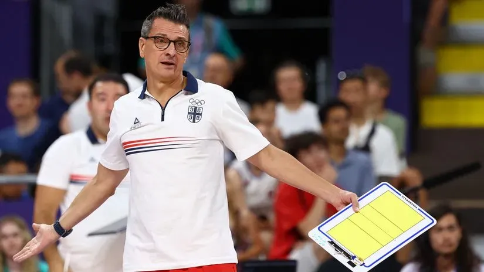

Gvidetijeva rekonstrukcija igračkog kadra i stručnog štaba
Vakif nastavlja dalje i bez Sanje Tomašević
Đovani Gvideti je već nekoliko puta bio prinuđen da pravi totalnu rekonstrukciju Vakifbanka. Kroz sličan proces prolazi i pred velike izazove u narednoj sezoni. Istanbulski gigant je ostao bez većeg dela igračkog kadra, promena ima i u stručnom štabu, dok se ozvaničenje pojačanja tek očekuje u predstojećim danima i nedeljama.
Italijanski stručnjak je prethodno i vratio velikana na tron. Iako je bio pomalo potcenjen, računajući i šanse glavnih konkurenata poput Fenerbahčea i Ezačibašija, pokvario je brojne računice. Međutim, sastav koji će krenuti u odbranu titule će biti umnogome drugačiji u odnosu na šampionski.
Privela se kraju saradnja sa čak šest odbojkašica. Među njima je i rastanak sa nosiocima igre, kao što su Kanađanka Kira Van Rajk, Italijanka Katerina Boseti i Kineskinja Ksinjue Juan. Opremu su razdužile i Amerikanke Kendal Knip i Aleksandra Franti, ali i Turkinja Bahar Akbaj, koje i nisu imale značajnu ulogu u nastupima na domaćoj i međunarodnoj sceni.
Oprostio se Gvideti i od vernih saradnika. Pomoćni trener Saim Pakan je preuzeo Turk Havu Jolari. Na taj način će po prvi put u svojoj karijeri obavljati funkciju glavnog stratega. Svojevremeno je radio i u ženskoj reprezentaciji Srbije, a u Vakif je stigao još 2015. Poveo je sa sobom u ambiciozni klub i kolegu Ilkera Altana, koji se zadržao samo sezonu u slavnom tima sa Bosfora.
Novost je i da deo višestrukog prvaka neće biti Sanja Tomašević. Nekadašnja srpska odbojkašica je protekla dve leta provela u Istanbulu, baš na istoj poziciji kao Pakan i Altan. Sprovodila je u tom periodu Gvidetijeve vizije, uz prethodno bogato iskustvo na koledžima u Sjedinjenim Američkim Državama od 2011. do 2023. godine.
Sada se sa nestrpljenjem očekuju i promocije pojačanja. Najveće bi trebalo da bude Tijana Bošković, koja je nedavno stavila tačku na eru u Ezačibašiju, posle čak decenije vernosti. Dres bivših šampiona Evrope je već "rezervisan" i za Katarinu Dangubić. Kao nova igračica igračica je viđena i Amerikanka Čijaka Ogbogu, koja je bila u Vakifu i od 2021. do 2024. Kako će tačno izgledati mašinerija, uskoro će biti poznato. Doduše, dugo se i naslućuje ko će biti predvodnik u pohodu na trofeje.
Verovatno i ne postoji dilema da će Gvideti napraviti konkurentan roster. Do sada je osvojio skoro 30 pehara sa Vakifbankom, pa i ne treba sumnjati da li će ponovo biti u krugu favorita u svim takmičenjima...